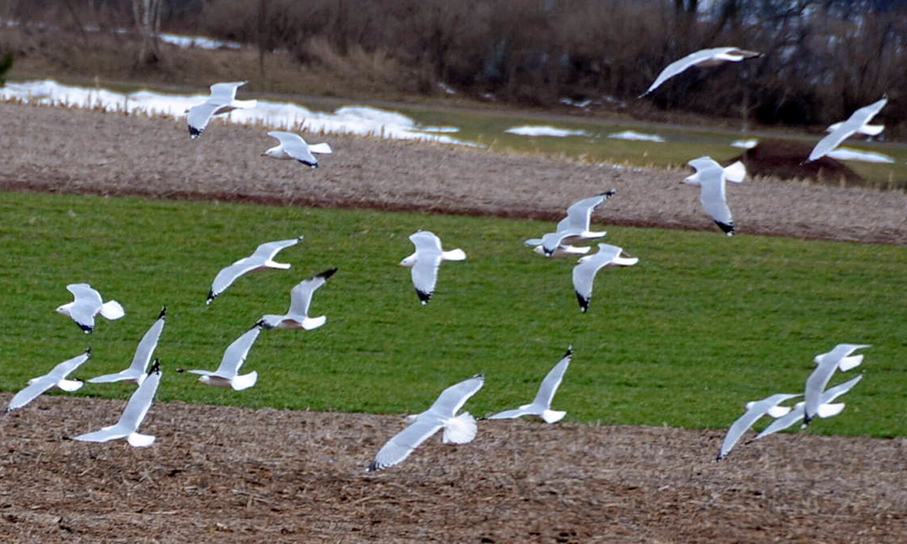

campus & community
Penn Center for Innovation celebrates 10 years
The University's nexus for technology transfer supports researchers in their innovative efforts, from CAR T to mRNA advancements that have dramatically reshaped the
world.
On Friday, February 14, 2025 the University will suspend normal operations for the Eagles victory parade
Normal operations will resume Monday, February 17, 2025
How Penn is helping with bird flu research and disease surveillance
Faculty are working on a new vaccine for the H5N1 virus, studying its transmission, and helping the state test samples from birds and mammals.
The University's nexus for technology transfer supports researchers in their innovative efforts, from CAR T to mRNA advancements that have dramatically reshaped the
world.

Communication Within the Curriculum Associate Director Sue Weber offers tips and tricks to control anxiety during public speaking. A Penn graduate student ID is required.
SPECIAL EVENTS
Historic Pennsylvania Hospital Tour
Holman Biotech Commons hosts a public tour of Pennsylvania Hospital, the nation's first hospital. Attendees will tour the Great Court, Historic Library, and Surgical Amphitheatre. Registration is required.
TALKS
Jesse Rothstein
Jesse Rothstein, a professor of public policy and economics at the University of California, Berkeley, hosts a seminar about the role of social safety net programs in college student success.
more events via penn today
Your support ignites change locally and globally, transforming Penn into a powerful engine that advances knowledge for society's greatest good.
During these challenging times, Penn remains committed to supporting students, faculty, and staff and to sharing information with our larger community of alumni, parents, and friends.
A look at a few of our big picture priorities that improve Penn as we create knowledge to benefit the world.